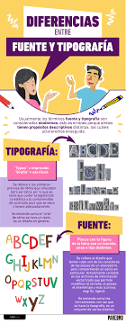
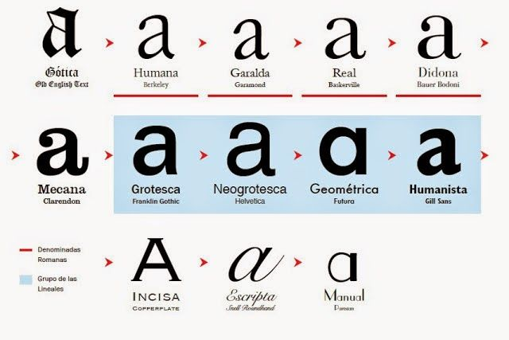

La tipografía hoy es conciderada un elemento tan importante como las imagenes mismas. Por tanto, la exigencia de encontrar el tipo de letra que mejor nos represente es esencial, especialemte en un mundo de las señales y las primeras impreciones lo son todo.
Te dejamos este link confiable para que descargues y encontrarás variedad:
